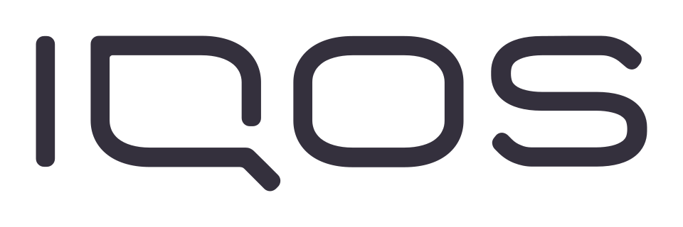

아이코스 Iqos
아이코스(Iqos)는 필립 모리스 인터내셔널이 담배 또는 담배가 없는 니코틴 제품과 함께 사용하도록 설계한 가열식 담배 기기 제품군이다.
최종 업데이트

아이코스는 어떤 브랜드인가
아이코스는 타바코 스틱을 태우지 않고 가열하는 방식에 중점을 둔 필립 모리스 인터내셔널의 주력 비연소 전자담배 기기이다. 2014년 일본과 이탈리아에서 처음 출시된 뒤 여러 국가로 판매 지역을 확대했다.
2016년부터 회사의 핵심 비연소 제품으로 자리 잡았으며, 다양한 가열식 기기와 액상형 전자담배 기기를 포함하는 제품군으로 확장됐다. 일반 담배보다 덜 해로운지와 장기적인 건강상 이점이 있는지는 입증되지 않았으며 과학계에서도 논쟁이 이어지고 있다.
아이코스는 어떻게 시작되고 성장했나
필립 모리스 인터내셔널은 1990년 가열식 전자담배 기기 분야에서 첫 상업적 단계를 밟았으며, 이후 Accord와 Heatbar 등을 시장에 내놓았다. 회사는 2011년부터 2014년까지 특허 구매와 기업 인수, 파트너십을 통해 연기 없는 담배 시장 진입을 추진했다.
첫 아이코스는 2014년 11월 일본 나고야와 이탈리아 밀라노에서 판매를 시작한 뒤 다른 국가로 확대됐다. 2016년부터 필립 모리스 인터내셔널이 일반 담배 대체 제품에 상업적 역량을 집중하면서 주력 제품이 됐다.
아이코스의 브랜드 아이덴티티는 무엇인가
담배를 연소하지 않고 타바코 스틱을 가열하는 기기와 여러 세대의 전용 시스템으로 구성된 필립 모리스 인터내셔널의 주력 비연소 제품군이라는 점이 특징이다.
아이코스의 대표 제품과 서비스는 무엇인가
제품군에는 아이코스 2.2, 아이코스 2.4, 아이코스 3, 아이코스 3 듀오, 아이코스 일루마 등 여러 세대의 가열식 담배 기기가 포함된다. 기본 기기는 충전기와 펜 모양 홀더로 구성되며, 가공 담배가 들어 있는 일회용 타바코 스틱을 홀더에 넣어 가열한다.
2021년 일본에서 출시된 아이코스 일루마는 인덕션 히팅 기술을 사용하는 시스템이다. 가열 담배 기반이 아닌 액상형 전자담배 기기 아이코스 메쉬도 출시됐으며, 이후 Veev로 이름이 변경됐다.
아이코스는 지금 어떤 상태인가
아이코스는 필립 모리스 인터내셔널의 제품이며 회사가 추진하는 비연소 제품 사업의 중심에 있다. 2023년 말 무연 제품은 회사 전체 순수익과 총이익의 거의 40%를 차지했고, 아이코스는 순수익 측면에서 Marlboro를 추월했다.
미국 FDA는 2020년 노출 감소 주장이 가능한 MRTP로 인가했지만, 안전하거나 FDA 승인을 받은 제품으로 간주해서는 안 되며 위험 저감 주장을 뒷받침하는 증거는 없다고 밝혔다.
아이코스 로고는 어떻게 변해왔나
자주 묻는 질문
아이코스는 어떤 산업의 브랜드인가요?
아이코스는 식음료 분야의 브랜드입니다.
아이코스의 브랜드 아이덴티티는 무엇인가요?
담배를 연소하지 않고 타바코 스틱을 가열하는 기기와 여러 세대의 전용 시스템으로 구성된 필립 모리스 인터내셔널의 주력 비연소 제품군이라는 점이 특징이다.
아이코스의 대표 제품은 무엇인가요?
제품군에는 아이코스 2.2, 아이코스 2.4, 아이코스 3, 아이코스 3 듀오, 아이코스 일루마 등 여러 세대의 가열식 담배 기기가 포함된다.
아이코스는 현재 어떤 상태인가요?
아이코스는 필립 모리스 인터내셔널의 제품이며 회사가 추진하는 비연소 제품 사업의 중심에 있다.
아이코스의 공식 웹사이트는 어디인가요?
아이코스의 공식 웹사이트는 https://www.iqos.com 입니다.
출처와 검증
아이코스 관련 참고: 공식 웹사이트 · 위키데이터 Q48744311 · 한국어 위키백과 · 영어 위키백과. 브랜드명은 한글과 원어를 함께 표기하되 데이터에 없는 표기는 만들지 않습니다. 기원 국가·설립연도는 검수된 정의문에서 확인된 값을 우선하고, 없을 때만 공식 웹사이트 URL이 일치하는 위키데이터 개체의 값을 씁니다. 위키데이터 값은 2026-09-20 기준입니다.